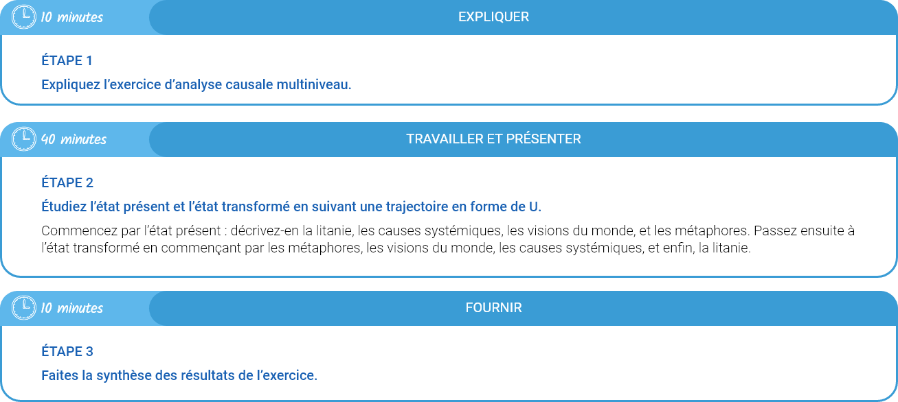
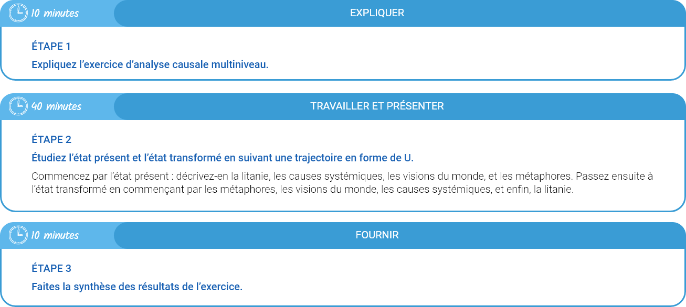

Outil permettant de déterminer et d'analyser la litanie, les causes sociales, les expressions des visions du monde, et les mythes et métaphores qui façonnent nos états présents et futurs. L'analyse causale multiniveau (ACM) comporte quatre niveaux :
Litanie - Discours dominant décrivant l'état actuel ou désiré des choses.
Causes systémiques - Causes sociales, économiques et politiques qui déterminent le présent et l'avenir.
Expressions des visions du monde - Prismes grâce auxquels nous appréhendons et façonnons notre monde.
Mythes et métaphores - Récits fondateurs inconscients.
À utiliser pour mieux comprendre les forces qui façonnent notre état présent, et ce qui doit changer à chacun des quatre niveaux si l’on souhaite parvenir à l’état futur souhaité.
Cet outil sert à analyser l’ensemble des forces expliquant l’état présent, et l’ensemble des changements qui doivent intervenir si l’on souhaite parvenir à l’état futur souhaité. Il aide aussi les participants à réfléchir sous l’angle du changement transformateur.


 
